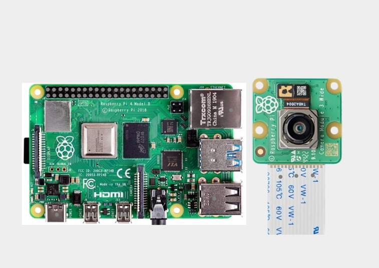

histogram.py

Real-Time Camera Histogram Analyzer

To develop a Real-Time Camera Histogram Analyzer using a Raspberry Pi 4 Model B and OV5647 CSI camera that captures live images, calculates the grayscale brightness histogram, measures minimum, maximum and average pixel brightness, and classifies the scene as DARK, NORMAL or BRIGHT.
The Real-Time Camera Histogram Analyzer demonstrates digital image processing, grayscale conversion, pixel-intensity analysis and histogram visualization on Raspberry Pi.
The Raspberry Pi 4 Model B captures live video through the OV5647 CSI camera using the Picamera2 library.
OpenCV converts each captured color frame into a grayscale image whose pixel intensities range from 0 to 255.
A 256-bin histogram is calculated to show the distribution of brightness values within the current image.
NumPy calculates minimum, maximum and average brightness values for each frame.
The average brightness determines whether the scene is classified as DARK, NORMAL or BRIGHT.
The experiment displays two OpenCV windows: one showing the live camera image with brightness measurements, and another displaying the grayscale histogram.
| Classification | Average Brightness | Interpretation |
|---|---|---|
| DARK | Below 70 | Low average image brightness |
| NORMAL | 70 to 180 | Intermediate average brightness |
| BRIGHT | Above 180 | High average image brightness |
| Parameter | Configuration |
|---|---|
| Controller | Raspberry Pi 4 Model B |
| Camera | OV5647 CSI Camera |
| Camera Interface | CSI |
| Capture Library | Picamera2 |
| Image Processing | OpenCV |
| Brightness Statistics | NumPy |
| Camera Resolution | 640 × 480 |
| Capture Format | RGB888 |
| Grayscale Range | 0–255 |
| Histogram Bins | 256 |
| Histogram Window | 640 × 400 |
| DARK Threshold | Below 70 |
| BRIGHT Threshold | Above 180 |
| Output Interface | OpenCV GUI Windows |
| Exit Key | Q |
| Pixel Intensity | Meaning |
|---|---|
| 0 | Black |
| 1–254 | Different shades of gray |
| 255 | White |
Image brightness depends on scene illumination, camera exposure, gain and other image-processing settings.
DARK, NORMAL and BRIGHT are software classifications based on grayscale image values. They are not calibrated illuminance measurements in lux.
The thresholds 70 and 180 may be adjusted after testing different lighting conditions.

Runs Picamera2, OpenCV, NumPy and real-time brightness analysis.

Captures live images for grayscale histogram analysis.

Provides regulated electrical power to the Raspberry Pi.
The experiment requires a working Raspberry Pi camera stack and a desktop environment capable of showing OpenCV windows.
| Component | Interface | Raspberry Pi Connection |
|---|---|---|
| OV5647 CSI Camera | CSI Camera Interface | Raspberry Pi Camera / CSI Connector |
The CSI camera is connected through the dedicated camera interface. No separate Raspberry Pi GPIO signals are required for the image-analysis program.
Avoid inserting or removing the camera connection while the Raspberry Pi is powered.

Picamera2 configures the camera for 640 × 480 capture using an RGB888 image stream.
OpenCV converts the live color image into grayscale, producing one intensity value for each pixel.
OpenCV groups pixel values into 256 histogram bins, corresponding to intensities from 0 to 255.
NumPy calculates the minimum, maximum and average pixel intensity from the grayscale image.
An average below 70 is DARK, an average above 180 is BRIGHT, and intermediate values are classified NORMAL.
The histogram frequencies are normalized for drawing and displayed as a white brightness curve against a dark background.
The analyzer displays a live camera window showing brightness statistics, and a separate histogram window showing the intensity distribution.
rpicam-hello -t 0.mkdir -p ~/Desktop/camera_histogram.histogram.py.python3 histogram.py in a graphical desktop session.Q while an OpenCV window has focus to stop the analyzer.Raspberry Pi Experiment · Code Review
Select a step to highlight its complete matching Python code section. Copy Code copies the entire program.
Each explanation tab highlights the correct Python section.
Picamera2 captures frames from supported Raspberry Pi cameras through the camera software stack.
A grayscale image represents brightness using a single intensity value. Zero is black and 255 is white.
A grayscale histogram shows how many pixels have each brightness value between 0 and 255.
NumPy processes the grayscale pixel array to calculate minimum, maximum and average brightness.
The supplied experiment uses an average below 70 for DARK and above 180 for BRIGHT.
Values from 70 through 180 are classified NORMAL.
Answers: OV5647 CSI camera; 640 × 480; 256 bins; 0; 255; below 70; above 180; Q.
Try It: Cover the camera and then point it toward a bright scene. Compare the changes in average brightness, classification and histogram shape.
Camera started successfully. Press Q to quit.
LIVE CAMERA Average Brightness: 125.4 Minimum: 12 Maximum: 247 Status: NORMAL [Live camera image]
BRIGHTNESS HISTOGRAM Y-axis: Relative histogram frequency X-axis: Grayscale intensity 0–255 [Live 256-bin histogram curve]
| Average Brightness | Classification |
|---|---|
| 35 | DARK |
| 95 | NORMAL |
| 150 | NORMAL |
| 220 | BRIGHT |
| Condition | Expected Response |
|---|---|
| Camera is covered | Average brightness generally decreases |
| Camera faces a bright scene | Average brightness generally increases |
| Lighting changes | Histogram distribution changes |
| Average falls below 70 | DARK is displayed |
| Average exceeds 180 | BRIGHT is displayed |
| Q key is pressed | Camera stops and windows close |
The example brightness measurements are illustrative. Actual results depend on the scene, illumination and camera settings.
The histogram graph uses normalized heights, so its displayed vertical dimension is relative and does not directly represent raw pixel counts.

This section is reserved for the experiment's output screenshot showing the live camera and brightness histogram. The program uses OpenCV windows rather than a browser-based dashboard.
The Real-Time Camera Histogram Analyzer demonstrates grayscale image processing using Raspberry Pi 4 and an OV5647 CSI camera.
The experiment calculates a 256-bin histogram and measures minimum, maximum and average pixel brightness from live camera frames.
The current scene is classified as DARK, NORMAL or BRIGHT based on the configured average-brightness thresholds.
The system displays live measurements and histogram visualization using OpenCV.